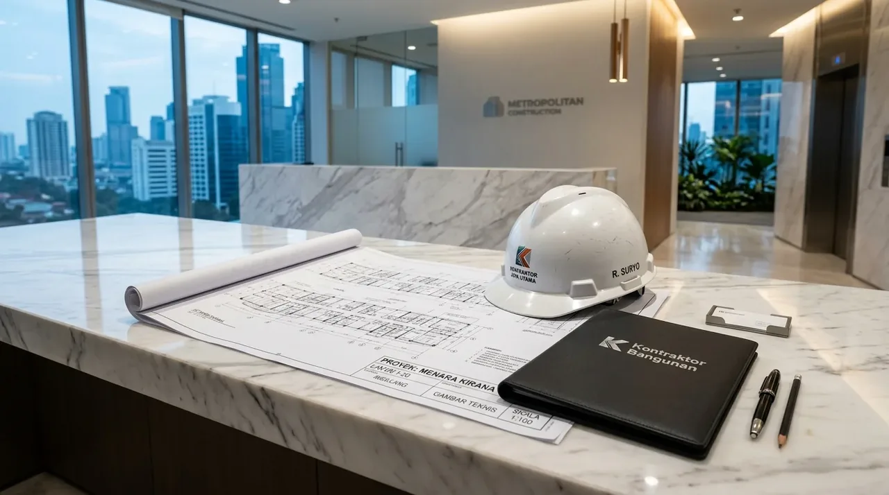

Bagaimana Perbandingan Akurasi Software RAB Bangunan Gratis di Pasaran?
Perbandingan akurasi software RAB bangunan gratis ditentukan oleh fleksibilitas penyesuaian koefisien bahan, keterhubungan rumus BoQ (Bill of Quantities), serta pembaruan indeks harga satuan daerah.
Aplikasi kalkulasi biaya bangunan yang beredar secara cuma-cuma memiliki karakteristik teknis yang berbeda dalam mengolah estimasi biaya:
| Nama Platform / Software | Tingkat Akurasi | Kelebihan Utama | Keterbatasan Teknis |
|---|---|---|---|
| Excel Template AHSP SNI | Tinggi (85% - 92%) | Rumus transparan, koefisien dapat diubah sesuai kondisi lapangan. | Membutuhkan pemahaman dasar input formula manual. |
| Software RAB Gratisan Mobile | Sedang (70% - 80%) | Praktis digunakan melalui smartphone, tampilan sederhana. | Pilihan spesifikasi material terbatas dan jarang di-update. |
| Estimator Web-Based Gratis | Sedang (75% - 82%) | Perhitungan cepat tanpa perlu instalasi aplikasi tambahan. | Terikat pada standar harga regional tertentu yang kaku. |
Tingkat akurasi di atas menunjukkan bahwa alat bantu digital gratis hanya berfungsi sebagai gambaran awal sebelum dokumen final disusun secara profesional.
- Periksa Dasar Rumus AHSP: Pastikan template rumus menggunakan referensi koefisien tenaga kerja dan material sesuai Standar Nasional Indonesia (SNI) atau PUPR terkini.
- Sesuaikan Indeks Harga Lokal: Jangan langsung percaya harga material default bawaan aplikasi, perbarui dengan survei harga toko bangunan di kota Anda.
- Gunakan Sebagai Pembanding Awal: Manfaatkan angka keluaran software gratis sebatas simulasi batas pagu anggaran sebelum meminta penawaran resmi kontraktor.
Apa Saja Keterbatasan Utama Software Estimasi Anggaran Gratisan?
Keterbatasan utama software estimasi gratisan meliputi ketiadaan pembaruan data harga material secara real-time, ketidakmampuan menghitung kompleksitas struktur bawah, serta ketiadaan toleransi limbah bahan.
Beberapa celah risiko dalam perhitungan otomatis aplikasi gratis antara lain:
- Fluktuasi Harga Lokal: Software tidak merekam perubahan harga semen, besi beton, dan batu spilit di tingkat distributor daerah yang sering bergejolak mengikuti inflasi dan rantai pasok.
- Pengabaian Faktor Limbah (Waste Factor): Aplikasi gratis kerap mengabaikan sisa potongan material sebesar 3% hingga 5% yang berakibat pada kekurangan bahan saat konstruksi berjalan.
- Ketiadaan Analisis Medan Lapangan: Rumus otomatis tidak mampu memprediksi biaya ekstra untuk kondisi tanah lunak, kebutuhan perkuatan dinding penahan, atau akses gang sempit yang membatasi armada material.

Validasi lembar kerja RAB bangunan profesional oleh Kontraktor Bangunan menjamin kepastian anggaran dan kesesuaian gambar arsitektur teknis.
Mengapa Memilih Kontraktor Bangunan Menjadi Solusi Validasi RAB Terbaik?
Menyerahkan perhitungan dan validasi anggaran kepada Kontraktor Bangunan menjamin bahwa setiap item pengerjaan fisik terhitung secara rasional, akurat, dan memiliki ikatan hukum yang aman.
Keuntungan komersial menggunakan layanan profesional terintegrasi:
- Penyusunan RAB Presisi: Menghitung volume berdasarkan gambar teknis arsitektur 3D dan analisis struktur sipil secara obyektif tanpa ada item pekerjaan yang terlewat.
- Akses Harga Distributor: Mengaplikasikan penawaran harga bahan bangunan langsung dari pabrikan utama dan grosir material untuk menekan total pengeluaran proyek.
- Garansi Harga Terikat: Seluruh anggaran dikunci dalam dokumen kontrak kerja borongan resmi tanpa ada risiko biaya tak terduga di tengah proyek.
Untuk mengamankan kepastian budget dan kualitas konstruksi fisik properti Anda, berkonsultasi dengan Kontraktor Bangunan adalah keputusan bisnis paling tepat.
Apa Saja Kekeliruan Fatal saat Menggunakan Software RAB Gratisan?
Kesalahan paling fatal adalah langsung menggunakan hasil total angka otomatis tanpa melakukan cross-check terhadap spesifikasi teknis dan kondisi riil di tapak bangunan.
Beberapa tindakan berisiko yang wajib dihindari antara lain:
- Mengabaikan Koefisien Upah Lokal: Menggunakan standar jam kerja dan upah tukang perkotaan untuk proyek di daerah pedesaan atau sebaliknya yang mengakibatkan deviasi biaya tenaga kerja.
- Menghapus Item Pekerjaan Persiapan: Lupa memasangkan alokasi dana untuk pembersihan lahan, pengukuran bowplank, pemagaran seng proyek, dan penyediaan air/listrik kerja.
- Tergiur Estimasi Terlampau Murah: Mempercayai kalkulasi aplikasi yang terlalu rendah tanpa memverifikasi mutu material yang digunakan, memicu risiko pengurangan spesifikasi (downgrade) saat konstruksi berlangsung.
FAQ seputar Review Software RAB Bangunan Gratis
Kesimpulan Praktis
Memahami review software RAB bangunan gratis membantu Anda menyadari pentingnya ketelitian dalam menyusun anggaran biaya proyek konstruksi. Meskipun aplikasi digital gratis memberikan gambaran umum, validasi dari tenaga ahli tetap merupakan syarat mutlak. Wujudkan pembangunan gedung dan rumah impian Anda dengan perhitungan anggaran yang presisi, transparan, dan terjamin aman. Hubungi tim Kontraktor Bangunan kami sekarang untuk konsultasi perencanaan serta penawaran RAB terbaik!